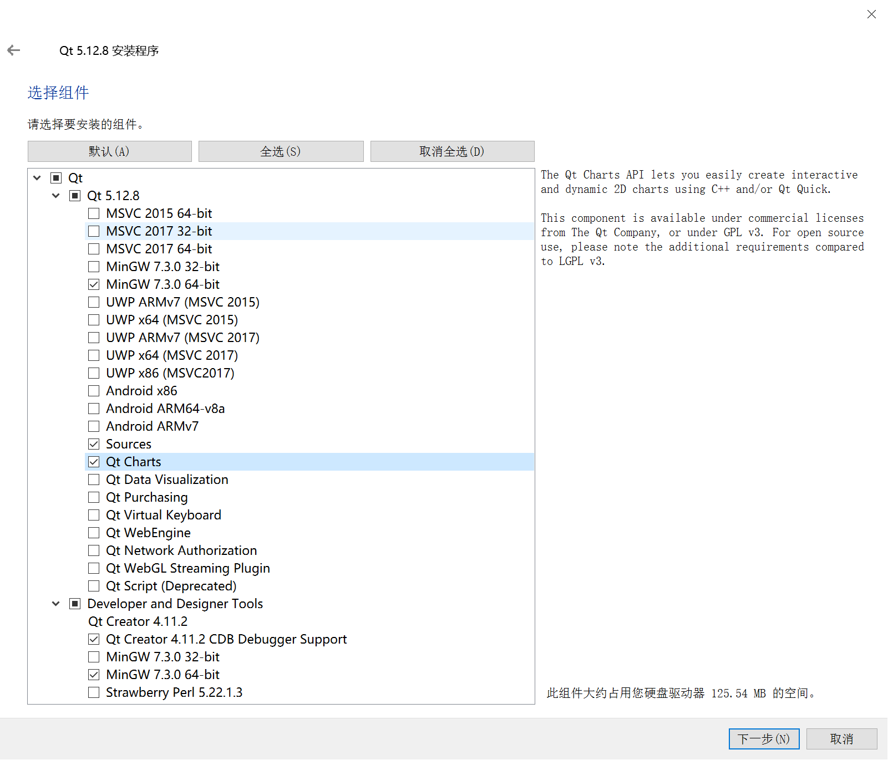
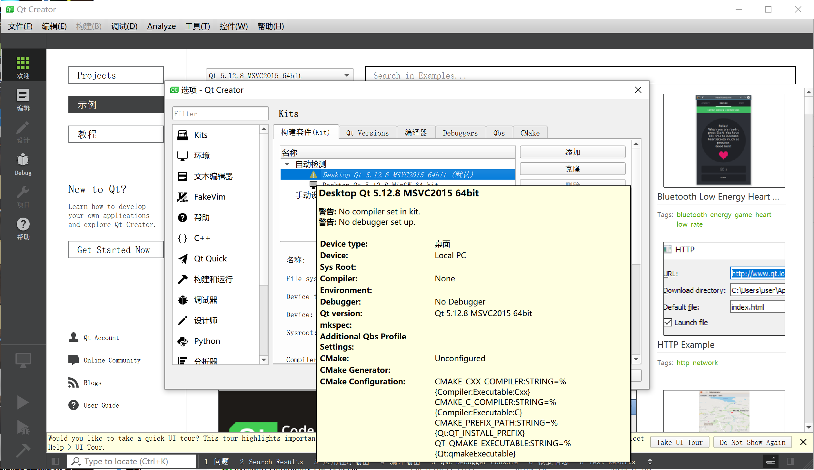
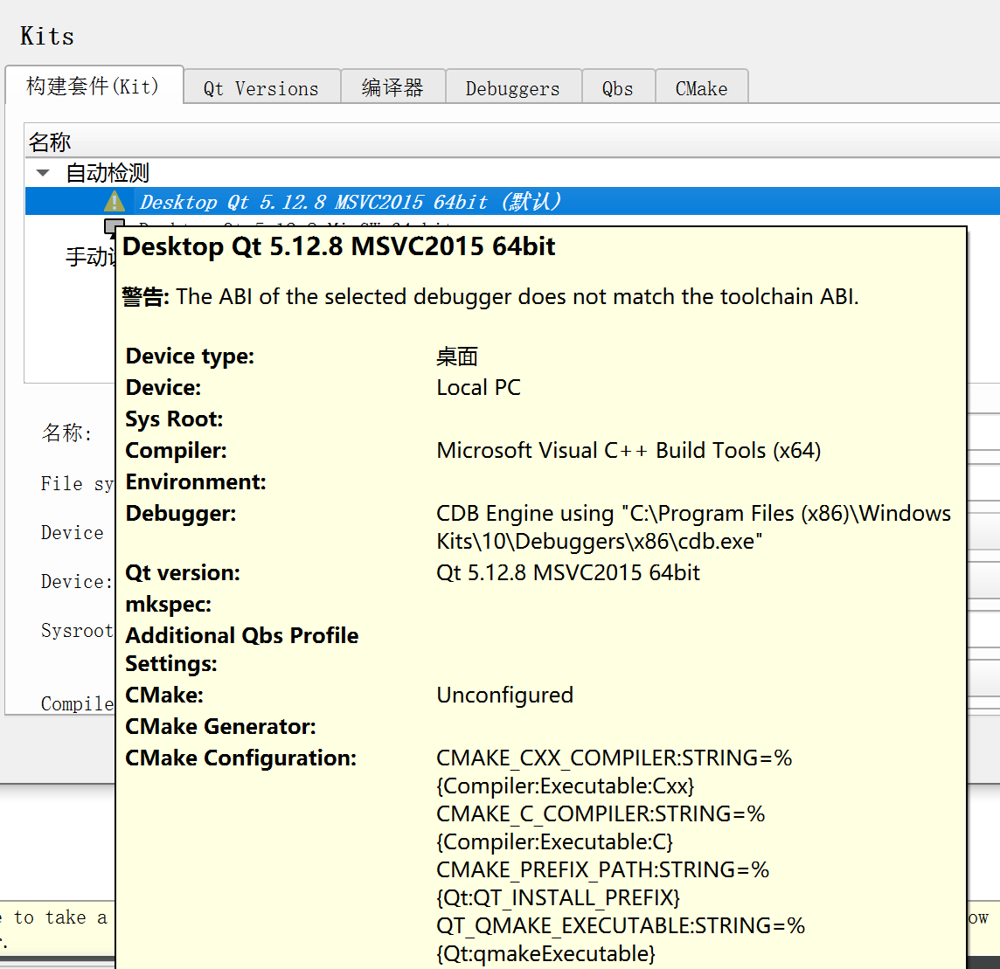
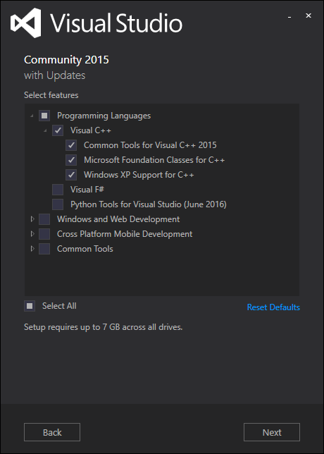

Qt5.12 + MSVC2015 +(VS2015 + clion)环境搭建
三种Qt开发环境方案
Win10搭建Qt + Clion 版本选择与开发环境方案
- Qt5.12.8 + Clion/QtCreator + MinGW：无法使用MSVC编译的lib库
- Qt5.12.8 + QtCreator + MSVC2015 +(+WinSDK) 免安装VS2015：无法用Clion进行调试开发
- Qt5.12.8 + Clion/QtCreator + VS2015/MinGW ：需要安装VS2015，才能在Clion中配置MSVC的Toolchains((虽然麻烦但是…JetBrainsYYDS！))
Qt/MSVC/Clion版本选取
选择Qt版本：Qt5.12.8，支持Win7，可以断网跳过登录账号。
- Qt在5.7之后不支持Win XP 系统，新增了QCharts组件，用于数据的可视化
- Qt5.15开始不支持离线安装，只能在线安装
- Qt6不支持Win7与Win10的32bit版本
选择Clion版本：
IntelliJ IDEA | AppCode | CLion | DataGrip | GoLand | PhpStorm | PyCharm | Rider | RubyMine | WebStorm
选择MSVC/VS版本：由于内网需要离线搭建环境，选择了Qt5支持的最低VS版本：MSVC2015/VS2015
Qt5.12.8/Clion2022.2.2/MSVC2015/VS2015下载与安装
安装Qt 5.12.8
- 下载地址：qt-opensource-windows-x86-5.12.8.exe 官方/国内镜像
- 断网跳过安装设定前的账号登录/注册
- 安装选项：必选：
MinGW+Ming W+Qt Creator，可选：Qt Charts(2D)，Qt Data Visualization(3D)，Sources(Qt源码) - 由于我需要搭建MSVC的编译环境，同时勾选了
MSVC2015 64-bit

“Qt 5.12.0”节点相关组件：
- MinGW 是 Minimalist GNU for Windows 的缩写，MinGW是 Windows 平台上使用的 GNU 工具集导入库的集合
- UWP 是 Windows 10 中 Universal Windows Platform 的简称，有不同编译器类型的 UWP
- MSVC 编译器的模块，需要计算机上已经安装相应版本的 Visual C++ /Visual Studio
- 用于 Android 平台的模块，如 Android x86 和 Android ARMv7
- Sources 模块是 Qt 的源程序
- Qt Charts:是二维图表模块，用于绘制柱状图、饼图、曲线图等常用二维图表
- Qt Data Visualization 是三维数据图表模块，用于数据的三维显示，如散点的三维空间分布、三维曲面等
**“Tools”节点相关组件：
- Qt Creator是用于 Qt 程序开发的 IDE
- MinGW 7.3.0 是 MinGW 编译工具链
- Strawberry Perl 是一个 Perl 语言工具
安装Clion2022.2.2
- Clion下载地址：https://www.jetbrains.com/clion/download/other.html
- 在Jetbrains官方下载页面中选择相应年份与版本下载.exe进行安装即可
安装MSVC2015+WinSDK
可以通过一台联网的电脑，进行MSVC2015离线安装包的构建，由于在查阅资料的过程中，较多反馈是“安装包丢失或损坏”/“不受信任的证书”等，直接用了一位网友分享的离线安装包，安装很顺利！链接如下：
离线安装包(需baidu网盘下载Orz)：mu_visual_cpp_build_tools_2015_update_3_x64_dvd_dfd9a39c.iso
MSVC2015安装完成后，在Qt中可以自动识别，如果系统没有WinSDK，会显示黄色感叹号：

Qt Creator中无MSVC2015的debugger程序，需要额外安装WinSDK
历史版本早Win的 SDK 版本：单机系统版本为Win10 21H1专业版，我选择的是Windows 10 SDK，版本 2004 (10.0.19041.0)
最新发行的WinSDK版本：最高支持Win11
离线安装请下载.iso，(Download .iso),Install SDK需要联网安装组件
打开安装包，Qt+MSVC只需要选择Debugging Tools for Windows即可。

- 在QtCreator中，需要设置MSVC与Cdb.exe为对应系统版本位数的（该图为版本位数不符合系统情况的报错）：

离线安装Visual Studio 2015
下载VS2015的离线安装包：官网链接中未找到，参考[How to download Visual Studio Community Edition 2015 (not 2017)]中Nasreddine的回答，Community Edition:
如果习惯用Visual Studio2015作为编程环境的话，VS2015下载支持Qt的组件即可：https://mirrors.tuna.tsinghua.edu.cn/qt/development_releases/vsaddin/2.7.2/
部分安装选项如下：
- Choose the type of installation:
Custom - Select features:
Programming Languages->Visual C++




- Choose the type of installation:
Qt相关系统环境变量
- 系统变量 -> Path中添加：
- C:\QT\Qt5.12.8\msvc2015_bit\bin
- C:\QT\Qt5.12.8\mingw73_64\bin
卸载Qt
C:\Qt\Qt5.12.8\MaintenanceTool.exe-> 移除所有组件